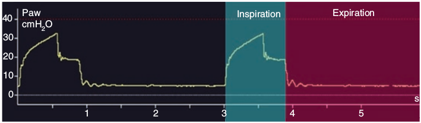

در هنگام ونتیلاسیون مکانیکی، منحنی فشار همیشه مثبت است. وقتی که فشار پایه منحنی بیشتر از صفر باشد نشان دهنده وجود PEEP می باشد. در صورت وقوع تنفس حمایت شده فشار راه هوائی در طی مدت انتقال حجم به داخل ریه از PEEP بالاتر میرود.

منحنی فشار نشان دهنده فشار در …………………….. میباشد
۱ – در خروجی جریان گاز ونتیلاتور
۲ – در راه هوائی پروکسیمال
۳ – در انتهای لوله تراشه
۴ – در حبابچه